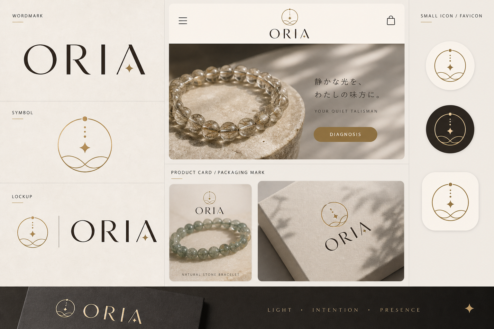

包装まで、静かに。
ロゴや印刷物は、きらめきよりも余白と手触りを優先します。
01
仕事、豊かさ、人間関係、心の安定。
02
ゴールド、透明、スモーキー、グリーン。
03
結果ではなく、日常の小さな合図として。
Soft conversion
B 版は右側 reference の雰囲気を強く使う案です。ブランドの記憶は残りやすい一方、A 版より診断入口は少し静かです。
あなたの診断結果を保存しました。Opening Gift の受け取りへ進めます。

ロゴや印刷物は、きらめきよりも余白と手触りを優先します。